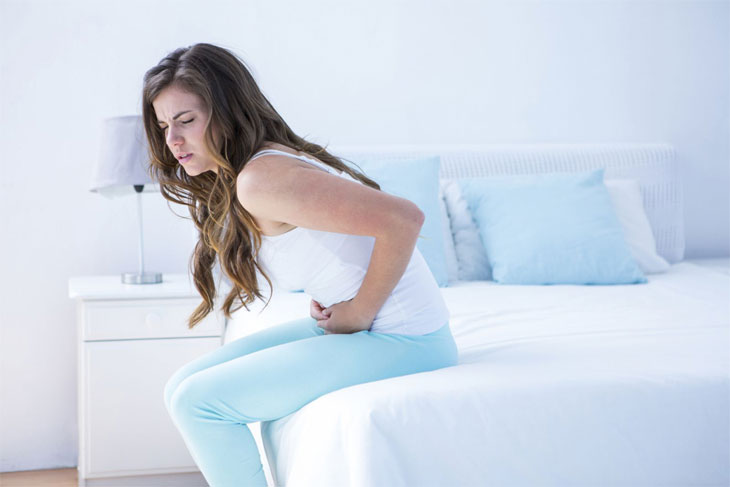

Estadísticamente, la cistitis en las mujeres es 75 veces más común que en los hombres. Si la enfermedad no se trata, se convierte en un proceso crónico que es peligroso y puede ser casi asintomático. El urólogo Miguel Ávila nos cuenta qué primeros auxilios se necesitan y qué hacer para evitar que la enfermedad pase a una forma crónica.

- Hola, Dr. Ávila, ¿сuáles es son las causas de la cistitis?
- La causa principal son las bacterias que entran en la vejiga. La mayoría de las veces es E.coli. Pero también la enfermedad la pueden provocar:
- hipotermia o resfriado;
- fallas hormonales;
- estilo de vida sedentario;
- inflamación genital;
- falta de higiene personal;
- traumatismo (más frecuente durante el sexo);
- estrés;
- consumo de alimentos picantes y alcohol.
- ¿Cómo se manifiesta la enfermedad?
- Cada organismo responde individualmente a la infección. Muy a menudo, la cistitis aguda se acompaña de dolor al orinar, dolores en la parte inferior del abdomen y fiebre. Puede haber sedimento turbio o sangre en la orina. Pero no se olvide de la cistitis latente.
- Si la enfermedad tiene una forma latente, ¿cómo se puede saber que estás enfermo?
- Este es el peligro de la cistitis. El proceso inflamatorio solo lo pueden mostrar estudios adicionales: un análisis de sangre detallado y una cistoscopia.
- Si la cistitis no te molesta, entonces tal vez no necesitas ser tratada y desaparecerá por sí sola?
- Con el tratamiento tardío e inadecuado la cistitis pasa a una forma crónica, lo que conduce a muchas consecuencias y complicaciones.
- ¿Cuáles exactamente?
- La cistitis afecta los riñones y otros órganos del sistema genitourinario y puede causar el desarrollo de:
- infertilidad;
- inflamación de ovarios;
- abscesos renales;
- insuficiencia renal;
- paracistitis;
- pielonefritis;
- trigonitis;
- cistalgia;
- reflujo vesicoureteral.

- ¿Cómo se puede ayudar en estos casos?
- El tratamiento de la cistitis debe ser complejo. A mi consulta vienen a menudo los pacientes, que actúan según lo siguiente: estaba enfermo, tomaba antibióticos y así de nuevo, un círculo vicioso. Esto es fundamentalmente incorrecto. Si después de un tiempo de tomar los antibióticos aparecen los síntomas de la cistitis, la enfermedad no se ha curado. Además, muchos descuidan su salud y hasta lo ultimo no toman medicamentos. Si te sientes mejor, esto no significa que estés sano. Es necesario someterse a un curso completo de tratamiento para que el cuerpo produzca anticuerpos contra las bacterias patógenas.
- ¿Qué es un tratamiento complejo?
- Llevar un estilo de vida saludable es muy importante: se debe evitar la hipotermia, suspender la vida sexual durante un tiempo, no tomar mucho alcohol y las especias. El tratamiento debe estar dirigido a la eliminación rápida del patógeno, la eliminación de los síntomas y la prevención de la recaída de la enfermedad. Los remedios a base de hierbas se usan activamente para prevenir el desarrollo de recaídas de la enfermedad, reducir la gravedad de la inflamación y el dolor y normalizar la micción. En mi práctica, uso 
- Cuéntanos más sobre este método de tratamiento.
- El medicamento en poco tiempo elimina la infección, elimina el dolor agudo y normaliza la micción. Una diferencia importante con respecto a otros remedios herbales es que tiene una acción dirigida, previene las recaídas y ayuda al cuerpo a fortalecer la inmunidad.
- ¿Este remedio ayuda con la cistitis aguda y crónica?
- ¿Cuánto tiempo se toma el medicamento para curar la cistitis?
- El medicamento se toma por cursos. En 28 días, no solo se eliminan los síntomas, sino que la microflora se ve recuperada y se crea una capa protectora que evita que las bacterias vuelvan a entrar. Es decir, se crea protección y se fortalece la inmunidad en la persona afectada. Para volver a enfermarte, tendrás que "esforzarte" mucho.
- Muchas gracias, dr. Ávila, por la información tan útil sobre cómo tratar adecuadamente la cistitis. Creo que es muy bueno que ahora no haya que tomar antibióticos, sino recibir tratamiento con la ayuda de remedios naturales.
- Gracias por la invitación. Quiero decir que hoy los médicos rechazan las medicinas sintéticas en favor de las naturales. Son menos peligrosas para los órganos internos y la inmunidad humana, y eliminan las infecciones bacterianas muy bien. Hasta ahora, es el único remedio natural que detiene la reproducción de bacterias y permite que los mecanismos de defensa naturales las eliminen.
¿Tienes alguna duda? Pregúntalo al especialista en